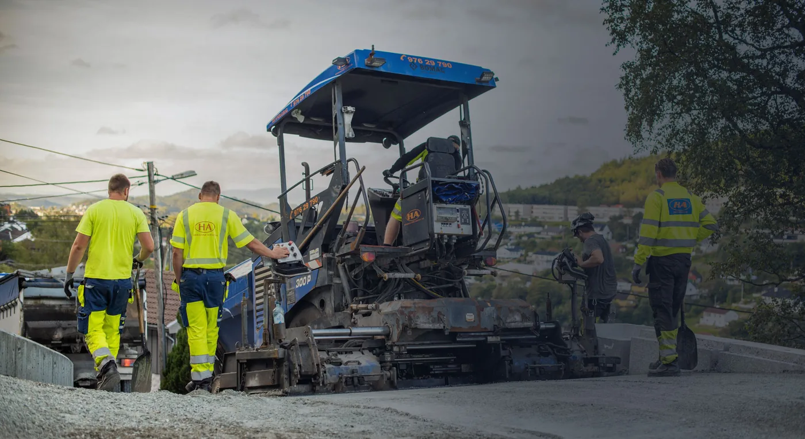
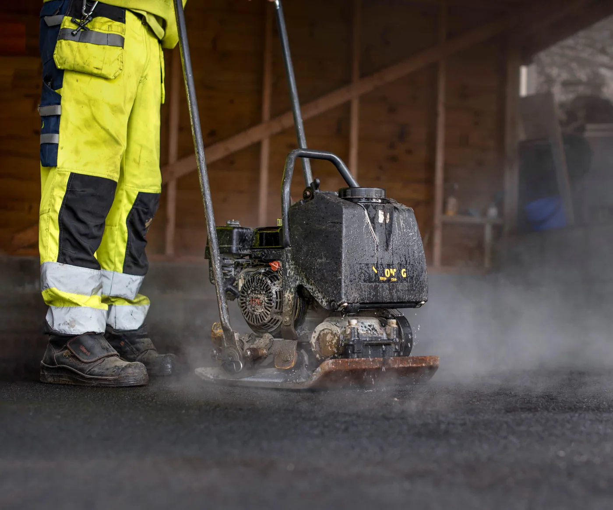

Asfalt · Bergen · sidan 2007
Vi løyser oppdraga.
Som eit leiande asfaltfirma har vi opparbeidd oss eit godt rennommé både hos faste kundar og nye kundar vi asfalterer for.
Sidan 2007Private og næringKommunale foretak
01 — Tenester
Det vi tar oss av
Alt innan asfalt – frå ny asfalt til reparasjon og fresing.

02 — Erfaring
Lang erfaring, godt rennommé
Vi har dreve under Hordaland Asfalt AS sidan oppstarten i 2007. I dag omset vi for over 40 millionar kroner, og har lang erfaring med alt innan asfalt.
- Private – innkøyrslar og plassar.
- Næring – parkering og næringsareal.
- Kommunalt – veg og reparasjon.
03 — Slik jobbar vi
Fire steg
Få pris før vi startar.
- Befaring
Areal, underlag og vatn.
- Pris
Tilbod med omfang.
- Arbeid
Fresing, utlegging og valsing.
- Ferdig
Gjennomgang og rydding.
«Vi har lang erfaring med alt innan asfalt.»
Skal det asfalteres i Bergen?
Ta kontakt for et tilbud – vi ser på forholda og seier kva jobben krev.